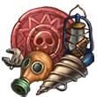
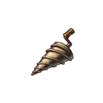
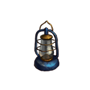
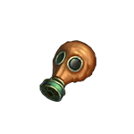
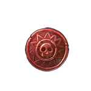
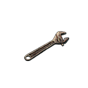

Получено: файл; исходный URL. Иллюстрация в отдельной статье ViveR_9 «Подземельная коллекция»; исходный файл без перекодирования. Авторство отдельно не установлено. Страница: источник.

Подземельная коллекция
Браузерная социальная версия; историческая статья; дата редакции неизвестна- Тип
- Коллекции
- Версия и дата
- Браузерная социальная версия; историческая статья; дата редакции неизвестна
Элементы коллекции















Данные по источнику · Браузерная социальная версия · историческая статья; дата редакции неизвестна
Предварительно: один материал, требуется сверка. Требуется сверка.
- Состав (источник Zombie-island)
- Бур; Лампа; Противогаз; Жетон; Разводной ключ.
- Награда (источник Zombie-island)
- 1 Фольга; 250 Опыт.
- Где копать Подземельную коллекцию в Зомби Ферме лопатами
- Элитный букет; Зимняя вишня одинарная; Зимняя вишня двойная 1; Зимняя вишня двойная 2; Воздушное сердце; Золотой миллиард; Воздушный букет; Снежная Ш; Снежная Н; Снежная М; Снежная Я; Марафонец; Флаг Марафонца.
- Подземельную коллекцию приносят в ведрах Рыбаки
- Рыбак; Рыбак с мозгами.
- Подземельную коллекцию можно найти в сундуках под ресурсами в Подземелье
- Палочка-выручалочка; Кристаллы; Подземный кактус; Черный мрамор; Белый мрамор; Зеленый мрамор; Гриб.
- Подземельную коллекцию можно получить из ценностей
- Зелье; Полосатое; Коллекционер 2; Сундук Чудовища 3.
- Подземельная коллекция попадается при колдовании Палочками
- Палочка-выручалочка.
Данные по источнику · браузерная версия; платформа в ответе не уточнена · Дата на странице (формат не уточнён): 23/03/2015
Предварительно: Ответ справочного сайта; достоверность и независимость от других фанатских источников не установлены. Возможны различия редакций и версии.. Требуется сверка.
- Ответ источника
- Подземельная коллекция в Зомби Ферме состоит из 5 элементов, собрав которые, можно получить моток фольги и 250 баллов опыта. Можно найти коллекцию, вооружившись лопатой, под воздушным, элитным букетом, снежными буквами-декораяциями, марафонцем, зимними вишнями. Иногда предметы, входящие в состав Подземельной коллекции, приносят рыбаки в своих ведрах. Игроки могут с помощью палочек-выручалочек выкопать коллекцию в сундуках, находящимися под кристаллами, расположенными Подземелье. Также коллекция может быть получена в качестве приза после прохождения квестов «Зелье» и «Полосатое».
Данные по источнику · браузерная версия; платформа не указана · дата редакции не установлена
Предварительно: Содержимое списка: изображения и колонки могут терять смысл при извлечении текста; отдельная страница и дата не проверены. Подписи alt иногда ошибочны.. Требуется сверка.
- Текст карточки из каталога
- 250 опыта и Фольга Бур Лампа Противогаз Жетон Разводной ключ Где копать (Лопатами): В ледяных буквах из школы, например, "Н", "Я","М". В Мраморной пещере, в Чёрном мраморе, в Мраморе (Зелёном), в Белом мраморе Марафонец, Флаг Марафонца Где копать (Палочками-выручалочками): В подземельях, кликая Палочкой-выручалочкой на подземные ресурсы. Например, на подземных кристаллах на 25.
Данные по источнику · браузерная версия; на сайте указана игра ВКонтакте · дата редакции не установлена
Предварительно: Исторический текст; сильно совпадает со справкой Zommbie.at.ua, независимость не доказана. Отрицания и доступность могут измениться с патчем.. Требуется сверка.
- Где искать по странице «Зомбастики»
- Снежные буквы М, Н, Р, Я, Ш; Подножье — большие грибы и хрустальные ресурсы; Мексиканский каньон — кактусы.
Данные по источнику · Историческая браузерная версия ВКонтакте; редакция неизвестна · дата публикации и последующей редакции не проверена
Предварительно: Фанатский справочник, возможна зависимость от других источников; вероятность находки не указана, актуальность не установлена.. Требуется сверка.
- Состав
- Бур, Лампа, Противогаз, Жетон, Разводной ключ.
- Обмен
- 250 опыта и 1 Фольга.
- Получение
- Среди перечисленных ценностей Хэллоуин 2018, Подарок три, Подарок четыре, Торт, Сундук Чудовища, Зелье, Перстень Капитана, Сабля пирата и Коллекционер 2; также Рыбак и Рыбак с мозгами.
- Палочки
- Октавий, «Осторожно — дикий зверь!», Пончик-перевёртыш, варианты подземного мрамора, подземных фонарей и ресурсы без уточнённых названий.
- Лопаты у друзей
- Любовь Слоника, Флаг Марафонца, Весенняя арка, Весенняя ограда, Золотой миллиард, Мастер урожая, Воздушное сердце, Воздушный букет, Марафонец, Весенняя ваза.
- Применение
- Луноход, Древний тоннель; задания «Тоннель», «Бездна», «Красота», «Рудник», «В прохладе», «Путеводитель» и «Песчаная буря».
Данные по источнику · историческая браузерная версия, платформа не указана · 10.01.2014 — дата в каталоге; дата редакции материала неизвестна
Предварительно: Фанатский список без вероятностей и уточнения площадки; независимость от других источников не установлена.. Требуется сверка.
- Где искать по списку сайта
- Снежные буквы (М,Н,Р,Я,Ш), Подножье (большие грибы и хрустальные ресурсы), Мексиканский каньон (кактусы)
- Оговорка
- Список может относиться к разным условиям, инструментам и периодам игры; не доказывает гарантированное выпадение. Заявления «только» и «невозможно» относятся лишь к времени и версии источника.
Связанные сущности
нет проверенных связей — требуется сверка.
Источники
- прочитано: Zombie-island.moy.su; проверка 2026-11-21
- FatalGame: прочитан отдельный ответ; дата на странице 23/03/2015
- ZOMBIA: прочитана карточка в списке
- Ссылка на отдельную страницу; отдельно не проверена
- Зомбастики: прочитана соответствующая строка; возможная копия другого справочника
- ViveR_9: прочитанная статья коллекции
- zommbie.at.ua: где искать коллекции